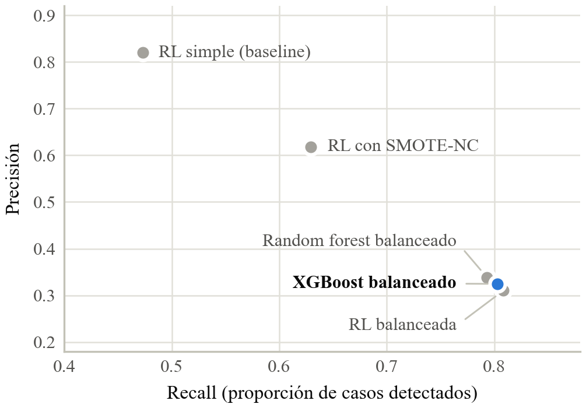
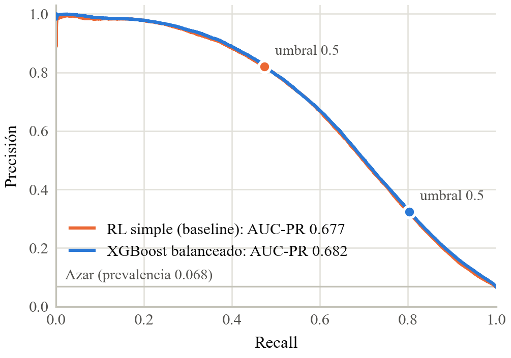
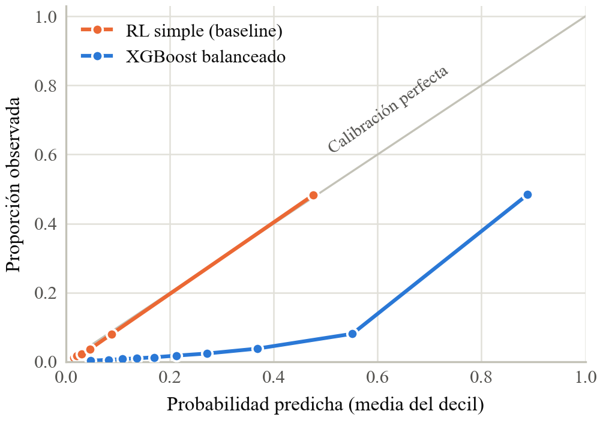
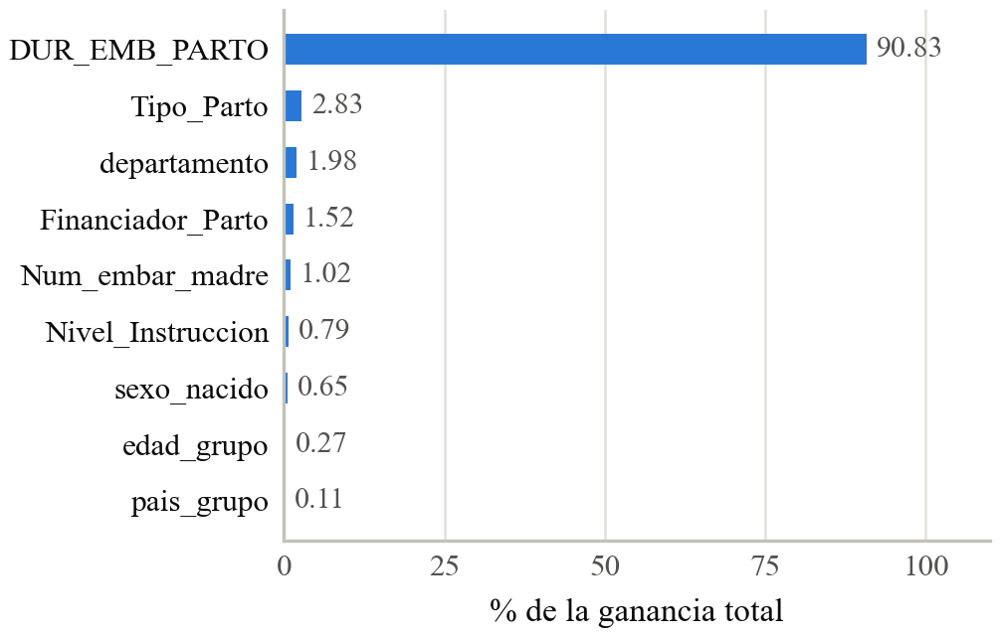

PONTIFICIA UNIVERSIDAD CATÓLICA DEL PERÚ · Facultad de Ciencias e Ingeniería
1INF62 Inteligencia Artificial Aplicada · Tarea Académica 2026-2
Resumen—El bajo peso al nacer (menos de 2500 g) afecta al 6.38 % de los nacimientos registrados en el Perú entre 2015 y 2025 y se asocia con mayor morbilidad y mortalidad neonatal. Este trabajo lo predice con 9 variables del Certificado de Nacido Vivo (CNV) del Ministerio de Salud, conocidas al momento del parto y antes del pesaje, usando 4.76 millones de registros: los modelos se entrenan con los nacimientos de 2015–2023 y se evalúan una sola vez con los de 2024–2025. Se compararon cinco modelos tomados de la literatura: regresión logística simple (baseline), regresión logística balanceada, regresión logística con SMOTE-NC, random forest balanceado y XGBoost. XGBoost balanceado obtuvo la mejor discriminación (AUC-ROC 0.913 y AUC-PR 0.682), apenas por encima del baseline (0.908 y 0.677), y con el umbral de 0.5 detecta el 80 % de los casos con 2.1 falsas alarmas por caso detectado. Los cinco modelos ordenan el riesgo casi igual: lo que más los distingue es el punto de operación, y la duración del embarazo concentra el 91 % de la importancia del modelo.
Palabras clave—bajo peso al nacer, aprendizaje automático, XGBoost, desbalance de clases, Perú.
El bajo peso al nacer, definido por la Organización Mundial de la Salud como un peso menor de 2500 g, se asocia con mayor morbilidad y mortalidad neonatal y con problemas de salud a largo plazo [1]. En el Perú, cada nacimiento genera un Certificado de Nacido Vivo (CNV), un registro administrativo nacional que el Ministerio de Salud (MINSA) publica como datos abiertos [2]. Entre 2015 y 2025, el 6.38 % de los nacimientos con peso válido tuvo bajo peso. Estos registros cubren a toda la población, pero rara vez se han usado en el país para construir modelos predictivos.
Identificar a los recién nacidos con mayor riesgo permitiría priorizar su atención. El problema tiene dos dificultades: la clase de interés es poco frecuente (un caso por cada 15 nacimientos), y la variable más informativa, la duración del embarazo, se registra al momento del parto. Por eso la tarea se plantea como la identificación, al nacer y antes del pesaje, de los recién nacidos que pueden necesitar atención especial, y no como una predicción prenatal.
El objetivo general es evaluar si los modelos de aprendizaje automático propuestos en la literatura pueden predecir el bajo peso a partir del CNV y determinar cuál funciona mejor. Las contribuciones son tres: una selección de 9 variables basada en un análisis exploratorio con criterios explícitos; una comparación de cinco modelos con un protocolo común y una partición temporal que simula su uso en años futuros; y un análisis de por qué un modelo funciona mejor, de sus errores y del costo de cada punto de operación.
El resto del documento se organiza así: la Sección II resume los trabajos relacionados; la Sección III describe el dataset y el análisis exploratorio; la Sección IV presenta la metodología; la Sección V, los resultados; la Sección VI los discute, y la Sección VII presenta las conclusiones y el trabajo futuro.
Almeida et al. [3] predicen el bajo peso con el registro de nacidos vivos de São Paulo (SINASC: 2.5 millones de registros de 2019–2023, con 9.5 % de bajo peso), el más parecido al CNV por ser poblacional y administrativo. Comparan regresión logística y random forest, con y sin pesos de clase, con una partición 80/20. La regresión logística balanceada obtuvo el mejor desempeño (AUC 0.85, recall 0.69), y el AUC del random forest bajó de 0.81 a 0.78 al balancear. De este trabajo se tomaron la regresión logística balanceada, el random forest balanceado y la eliminación de casos incompletos.
Khan et al. [4] comparan 30 algoritmos para estimar el peso y clasificar el bajo peso en 821 madres de Emiratos Árabes Unidos (10.8 % de bajo peso), con selección de variables y sobremuestreo SMOTE [5] aplicado solo al entrenamiento. La mejor clasificación fue la regresión logística con SMOTE al 100 % (accuracy 0.90 y F1 ponderado 0.89), aunque detectó solo 6 de los 18 casos de su prueba. De este trabajo se tomó la regresión logística con SMOTE, en su variante para variables categóricas (SMOTE-NC).
Ranjbar et al. [6] evalúan ocho algoritmos para predecir el bajo peso con 8 853 partos de la red IMaN Net de Irán (14.5 % de bajo peso), con variables clínicas y sociodemográficas y validación cruzada. XGBoost fue el mejor modelo global (AUROC 0.79, accuracy 0.79, F1 0.77), la red neuronal alcanzó el AUROC más alto (0.86), y la edad gestacional y el antecedente de bajo peso fueron los predictores más importantes. De este trabajo se tomaron XGBoost y el análisis de importancia de las variables.
Liu et al. [7] estiman el peso al nacer con ocho modelos de regresión en una cohorte de 4 754 pares madre-hijo de Beijing, con búsqueda en grilla, validación cruzada e importancia por permutación. El ensamble de votación y la SVR lograron el menor error (RMSE de 351 a 375 g), y la edad gestacional fue el predictor principal. De este trabajo se tomaron la búsqueda de hiperparámetros en grilla y el análisis de qué variables explican la predicción.
Se usó el registro de Certificados de Nacido Vivo del MINSA [2], publicado en la Plataforma Nacional de Datos Abiertos como datos públicos de libre acceso, con corte al 30 de noviembre de 2025: 4 874 510 registros y 22 variables de 2015 a 2025. Las variables describen al recién nacido (peso, talla, sexo y fecha), a la madre (edad, estado civil, nivel de instrucción, ocupación, país de origen y ubigeo de residencia), su historia obstétrica (embarazos, hijos vivos y fallecidos, abortos), el embarazo y el parto (duración, tipo y condición del parto) y la atención del parto (lugar, personal, financiador y establecimiento). La variable objetivo vale 1 si el peso es menor de 2500 g. Los datos no contienen identificadores personales, así que no se requirió un permiso adicional.
La prevalencia de bajo peso es de 6.38 % (1:15), así que la accuracy no es una métrica válida y hay que tratar el desbalance. Los faltantes vienen codificados como IGNORADO, −1 o 99; en las 9 variables elegidas ninguno supera el 1.02 %, pero el número de abortos previos tiene 8.6 % de faltantes, que varían de 5.0 % a 20.6 % según el departamento y causarían el 79 % de las filas perdidas. Menos del 0.1 % de los valores está fuera de rango (por ejemplo, 558 pesos de exactamente 300 g), y el peso muestra redondeo: 16 353 registros pesan exactamente 2500 g, frente a 4 679 con 2490 g. El número de hijos vivos es redundante con el de embarazos (ρ = 0.88), y las asociaciones entre las variables categóricas son débiles (V de Cramér ≤ 0.22). La duración del embarazo domina: sola alcanza un AUC de 0.89, frente a 0.58 o menos de cualquier otra variable, y la tasa de bajo peso pasa de 97.6 % con 31 semanas o menos a 0.8 % con 41 o más. Además, la prevalencia sube de 6.30 % en 2015–2023 a 6.79 % en 2024–2025, mientras la relación entre la duración y el bajo peso se mantiene estable (AUC de 0.884 a 0.891 por año).
Con seis criterios (validez, calidad, redundancia, asociación propia condicionada a la duración del embarazo, costo y uso) se eligieron 9 variables: duración del embarazo en semanas, tipo de parto (único o múltiple), departamento, grupo de edad de la madre, número de embarazos, nivel de instrucción, financiador del parto, sexo del recién nacido y país de origen de la madre. Se excluyeron las variables que se definen durante el parto o miden al recién nacido (como la talla o el personal que atendió el parto), las de baja calidad (estado civil, hijos fallecidos y abortos previos) y la redundante (hijos vivos).
Se repararon 388 filas con el separador corrupto; los códigos de faltante y los valores fuera de rango se convirtieron en faltantes; se eliminaron 3 024 registros sin peso válido y se conservaron los casos completos en las 9 variables (4 764 960 registros, el 97.81 %). Las categorías poco frecuentes se agruparon, el ubigeo se agregó a 25 departamentos y la edad se representó en grupos. Las 7 variables categóricas se codificaron con one-hot y las 2 numéricas se estandarizaron (53 columnas), ajustando el preprocesador solo con el entrenamiento. No se usó aumento de datos, salvo el sobremuestreo del tercer modelo, aplicado solo al entrenamiento. Por el cambio de prevalencia se usó una partición temporal: los nacimientos de 2015–2023 se dividieron al azar en entrenamiento (80 %, 3 237 829 registros) y validación (20 %, 809 458), estratificando por la clase y con semilla 42 (6.32 % de bajo peso en ambos); los de 2024–2025 forman la prueba (717 673 registros, 6.81 %), usada una sola vez por modelo.
Se implementaron cinco modelos con scikit-learn [8] y XGBoost [9], cada uno en su notebook: (1) una regresión logística simple, sin tratamiento del desbalance (baseline; C = 1, L2); (2) una regresión logística balanceada, con pesos de clase inversos a su frecuencia, como en [3]; (3) una regresión logística con sobremuestreo SMOTE-NC [5] (5 vecinos), como en [4]; (4) un random forest [10] balanceado de 50 árboles; y (5) XGBoost [9], que construye árboles en secuencia, cada uno corrigiendo los errores de los anteriores, con tasa de aprendizaje 0.1 y early stopping (hasta 2000 árboles, con parada tras 50 sin mejora del AUC-PR en validación). Los hiperparámetros se eligieron con búsqueda en grilla (grid search) evaluada por AUC-PR en validación; las combinaciones a menos de 0.001 del mejor valor se consideraron empatadas y se prefirió la más simple (Tabla II).
Se reportan el AUC-ROC y el AUC-PR, que no dependen del umbral, y la precisión, el recall, el F1 y la accuracy con el umbral de 0.5, sin calibrar, como en [3], [4] y [6]. El AUC-PR es la métrica principal porque la clase es rara: para un clasificador al azar vale la prevalencia (0.068 en la prueba). El modelo final se eligió con un orden fijado de antemano: primero la discriminación (AUC-PR y AUC-ROC); luego el recall, porque perder un caso es el error más costoso; y por último el F1 y la precisión, que describen el costo en falsas alarmas. La accuracy solo se reporta como referencia: predecir siempre «peso normal» ya da un 93 %.
La Tabla I compara los cinco modelos en la prueba. Todos tienen un AUC-ROC de 0.907 a 0.913 y un AUC-PR de 0.677 a 0.682, unas diez veces el del azar. XGBoost balanceado obtiene los valores más altos en ambas métricas y es el modelo elegido, pero su ventaja es pequeña: 0.005 en AUC-ROC y 0.004 en AUC-PR sobre el baseline, y 0.002 y 0.003 sobre el random forest. La ventaja se repite en validación, donde sus 12 combinaciones (AUC-PR de 0.6733 a 0.6740) superan a la mejor configuración de cada uno de los demás modelos (0.6697 o menos), y se mantiene en el tiempo: el AUC-ROC de XGBoost pasa de 0.909 en validación a 0.913 en la prueba.
Con el umbral de 0.5 los modelos se separan mucho más (Fig. 1). El baseline tiene la mayor precisión (0.82) y la mayor accuracy (0.957), pero detecta menos de la mitad de los casos (23 144 de 48 907). Los tres modelos balanceados detectan alrededor del 80 % con unas dos falsas alarmas por caso detectado, y SMOTE-NC queda en un punto intermedio, con el mejor F1 (0.62). XGBoost balanceado detecta 39 271 casos con 81 718 falsas alarmas (2.1 por caso detectado); frente a la regresión balanceada, con un recall casi igual, genera unas 6 200 falsas alarmas menos. La Fig. 2 muestra que XGBoost y el baseline tienen curvas precisión-recall casi idénticas y que el umbral de 0.5 los ubica en zonas distintas de esa curva.
TABLA I. COMPARACIÓN DE MÉTRICAS EN EL CONJUNTO DE PRUEBA
| Modelo | AUC-ROC | AUC-PR | Recall | Precisión | F1 | Accuracy |
|---|---|---|---|---|---|---|
| RL simple (baseline) | 0.908 | 0.677 | 0.473 | 0.820 | 0.600 | 0.957 |
| RL balanceada | 0.908 | 0.677 | 0.809 | 0.310 | 0.449 | 0.865 |
| RL con SMOTE-NC | 0.907 | 0.677 | 0.630 | 0.618 | 0.624 | 0.948 |
| Random forest balanceado | 0.911 | 0.679 | 0.793 | 0.339 | 0.475 | 0.880 |
| XGBoost balanceado | 0.913 | 0.682 | 0.803 | 0.325 | 0.462 | 0.873 |
Prueba 2024–2025: 717 673 nacimientos, 48 907 con bajo peso. Recall, precisión, F1 y accuracy con umbral 0.5. RL: regresión logística. En negrita, el mejor valor de cada columna.


La Tabla II resume la búsqueda en grilla. En XGBoost, las 12 combinaciones quedaron empatadas en validación (AUC-PR de 0.6733 a 0.6740) porque el early stopping compensa la profundidad con el número de árboles: entre 653 y 917 con profundidad 4 y entre 117 y 227 con profundidad 8. Las versiones con y sin scale_pos_weight difieren en 0.0002 o menos de AUC-PR; por la regla de desempate se eligieron la profundidad 4, min_child_weight = 100 y la versión balanceada, de mayor recall en validación (0.78 frente a 0.49).
TABLA II. HIPERPARÁMETROS EXPLORADOS Y MEJOR CONFIGURACIÓN POR MODELO
| Modelo | Hiperparámetro | Valores probados | Mejor valor |
|---|---|---|---|
| RL simple (baseline) | Ninguno (sin búsqueda) | C = 1, L2 fijos | — |
| RL balanceada | C | 10−5, 10−4, 10−3, 10−2, 10−1, 1 | 10−4 |
| Penalización | L1, L2 | L2 | |
| RL con SMOTE-NC | Proporción de sobremuestreo | 0.25, 0.5 | 0.25 |
| C | 10−4, 10−3 | 10−4 | |
| Penalización | L1, L2 | L2 | |
| Random forest balanceado | min_samples_leaf | 10, 50, 200 | 50 |
| max_features | sqrt, 0.5 | 0.5 | |
| max_samples | 0.1, 0.3 | 0.3 | |
| XGBoost balanceado | max_depth | 4, 6, 8 | 4 |
| min_child_weight | 1, 100 | 100 | |
| scale_pos_weight | 1, 14.8 | 14.8 | |
| N.º de árboles | Early stopping (≤ 2000) | 917 |
Búsqueda en grilla evaluada por AUC-PR en validación. AUC-PR en validación de la mejor configuración: 0.6666 (baseline), 0.6655, 0.6659, 0.6697 y 0.6735 (XGBoost).
Los modelos balanceados sobreestiman el riesgo (Fig. 3): en el decil de mayor riesgo, XGBoost predice en promedio 0.89 cuando la proporción observada es 0.48, mientras que el baseline está bien calibrado. Por último, la duración del embarazo concentra el 90.8 % de la importancia por ganancia de XGBoost; le siguen el tipo de parto (2.8 %), el departamento (2.0 %) y el financiador del parto (1.5 %) (Fig. 4).


Por qué XGBoost funcionó mejor. Con el random forest, es uno de los dos modelos no lineales: sus árboles representan relaciones no lineales e interacciones que la regresión logística, al sumar efectos, no captura. A diferencia del random forest, construye los árboles en secuencia, cada corte puede usar las 53 columnas (en el random forest elegido, solo la mitad, al azar) y el número de árboles se ajusta con early stopping. El sobreajuste fue leve: la brecha de AUC-PR entre entrenamiento y validación no pasó de 0.007, frente a 0.021 del random forest con hojas de 10 registros.
Por qué la mejora es pequeña. Una sola variable lleva casi toda la señal: la duración del embarazo sola alcanza un AUC de 0.89; con las otras ocho variables la regresión logística llega a 0.908, y XGBoost agrega 0.005 más (Tabla I, Fig. 4). Su efecto va en una sola dirección, algo que un modelo lineal ya representa bien. El techo lo pone la información del CNV, no el algoritmo.
Errores frecuentes. Los errores de XGBoost se ordenan según la duración del embarazo. Con el umbral de 0.5 marca a todos los nacimientos pretérmino: detecta el 100 % de sus 31 279 casos de bajo peso, y 24 301 de sus falsas alarmas (el 30 %) son prematuros con peso normal. Todos los casos que pierde (9 636) nacieron a término (37 semanas o más): ahí el bajo peso no se debe a la prematuridad, sino a un crecimiento fetal menor al esperado, que las variables del CNV casi no permiten anticipar. Entre esos 17 628 casos, el 36 % del total, XGBoost detecta el 45 % a costa de 57 417 falsas alarmas, y el baseline solo el 1 %, lo que explica su bajo recall.
El desbalance es una decisión de punto de operación. Balancear por pesos o con SMOTE-NC sube el recall a costa de la precisión sin cambiar el orden de los casos (Fig. 1 y 2). Con más de 200 000 casos de bajo peso en el entrenamiento, SMOTE-NC no aporta información nueva, a diferencia de [4], que tenía 89 casos, y fue de los modelos más costosos (cerca de una hora, frente a minutos con pesos de clase). El balanceo también infla las probabilidades (Fig. 3): con scale_pos_weight ≈ 14.8, el modelo estima aproximadamente las odds reales multiplicadas por 14.8, así que habría que recalibrarlas antes de usarlas como riesgo absoluto.
Comparación con la literatura. Como en [6], XGBoost queda primero y la edad gestacional es el predictor principal, igual que en [4] y [7]. A diferencia de [3], donde el random forest rindió peor que la regresión logística y el balanceo le restó discriminación, aquí los modelos de árboles quedan levemente por encima y el balanceo no redujo la discriminación de XGBoost. Las cifras no son directamente comparables por las diferencias de población, variables, prevalencia y validación.
Limitaciones. La duración del embarazo se conoce al momento del parto, así que el modelo no sirve para una predicción prenatal. El umbral se fijó en 0.5, y la precisión, el recall y el F1 dependen de esa elección. Se usó una sola partición de validación y un solo período de prueba, sin intervalos de confianza: con diferencias de milésimas, no se puede asegurar que el orden de los modelos se mantenga en otros años. El CNV no registra variables clínicas (controles prenatales, anemia, hipertensión, IMC ni el antecedente de bajo peso), y el redondeo del peso en 2500 g agrega ruido a la etiqueta justo en el umbral. Por costo de cómputo no se ajustaron todos los hiperparámetros (por ejemplo, la tasa de aprendizaje de XGBoost), y la grilla de XGBoost tomó unos 64 minutos, frente a 13 segundos del baseline.
Insights. Elegir el modelo es también elegir un punto de operación: si la prioridad es no perder casos, un modelo balanceado detecta el 80 % con unas dos falsas alarmas por caso; si los recursos son limitados, el baseline o SMOTE-NC generan muchas menos alertas (Tabla I). La accuracy confunde: el modelo con la mejor accuracy (0.957) es el que más casos pierde.
Los autores utilizaron Claude (modelo Claude Opus 5.5, de Anthropic), a través de Claude Code, para redactar la interpretación de resultados del notebook de XGBoost, actualizar los archivos de comparación de resultados, y redactar este reporte y generar sus figuras a partir de los resultados de los notebooks. [Completar: otras herramientas de IA usadas en las demás etapas, si las hubo, y qué partes del trabajo no usaron IA.] Todo el contenido fue revisado, verificado y editado por los autores, quienes asumen la responsabilidad total del trabajo.
Repositorio: https://github.com/jasnai10/AI_Project
Cada integrante revisó un artículo: J. Aguilera [3], L. Araujo [6], N. Condori [7] y P. Vilcayauri [4]. [Completar: contribución de cada integrante al análisis exploratorio, a los modelos y al reporte.]
[1] World Health Organization, “Global nutrition targets 2025: Low birth weight policy brief,” WHO, Ginebra, Suiza, Rep. WHO/NMH/NHD/14.5, 2014.
[2] Ministerio de Salud del Perú, “Registros de nacidos vivos en el Perú (2015–2025),” Plataforma Nacional de Datos Abiertos, 2025. [En línea]. Disponible: https://www.datosabiertos.gob.pe/dataset/registros-de-nacidos-vivos-en-el-perú-2015–2025
[3] A. V. A. Almeida, A. O. R. Santos y L. F. C. Nascimento, “Predictive modeling with machine learning for low birth weight in the state of São Paulo: A retrospective population-based study,” São Paulo Med. J., 2026, doi: 10.1590/1516-3180.2025.3373.04052026.
[4] W. Khan, N. Zaki, M. M. Masud, A. Ahmad, L. Ali, N. Ali y L. A. Ahmed, “Infant birth weight estimation and low birth weight classification in United Arab Emirates using machine learning algorithms,” Sci. Rep., vol. 12, art. no. 12110, 2022, doi: 10.1038/s41598-022-14393-6.
[5] N. V. Chawla, K. W. Bowyer, L. O. Hall y W. P. Kegelmeyer, “SMOTE: Synthetic minority over-sampling technique,” J. Artif. Intell. Res., vol. 16, pp. 321–357, 2002, doi: 10.1613/jair.953.
[6] A. Ranjbar, F. Montazeri, M. V. Farashah, V. Mehrnoush, F. Darsareh y N. Roozbeh, “Machine learning-based approach for predicting low birth weight,” BMC Pregnancy Childbirth, vol. 23, art. no. 803, 2023, doi: 10.1186/s12884-023-06128-w.
[7] Z. Liu, N. Han, T. Su, Y. Ji, H. Bao, S. Zhou, S. Luo, H. Wang, J. Liu y H.-J. Wang, “Interpretable machine learning to identify important predictors of birth weight: A prospective cohort study,” Front. Pediatr., vol. 10, art. no. 899954, 2022, doi: 10.3389/fped.2022.899954.
[8] F. Pedregosa et al., “Scikit-learn: Machine learning in Python,” J. Mach. Learn. Res., vol. 12, pp. 2825–2830, 2011.
[9] T. Chen y C. Guestrin, “XGBoost: A scalable tree boosting system,” en Proc. 22nd ACM SIGKDD Int. Conf. Knowl. Discov. Data Min., 2016, pp. 785–794, doi: 10.1145/2939672.2939785.
[10] L. Breiman, “Random forests,” Mach. Learn., vol. 45, no. 1, pp. 5–32, 2001, doi: 10.1023/A:1010933404324.